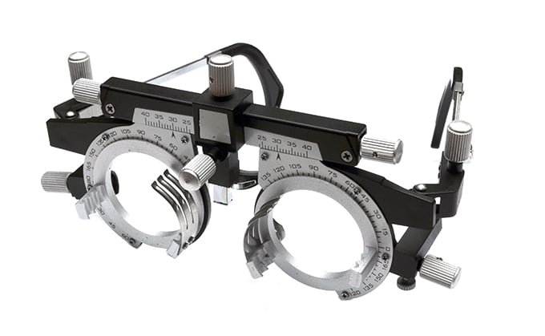
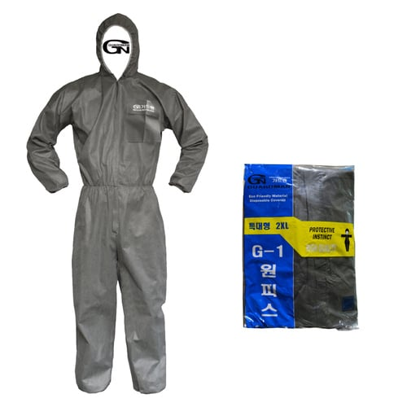

시험전 안경 일괄 압수후 요청시 이 안경에 원하는 도수대로
렌즈 끼워서 쓰고 시험치게 하면 됨
목걸이 카메라등 기타 악세사리를 이용한 부정도 막으려면

이거 일괄 지급해서 자꾸 목 끝까지 올리고 입은채로 시험치고
자꾸 조금이라도 내리면 즉시 부정행위로 처단하면 됨

시험전 안경 일괄 압수후 요청시 이 안경에 원하는 도수대로
렌즈 끼워서 쓰고 시험치게 하면 됨
목걸이 카메라등 기타 악세사리를 이용한 부정도 막으려면

이거 일괄 지급해서 자꾸 목 끝까지 올리고 입은채로 시험치고
자꾸 조금이라도 내리면 즉시 부정행위로 처단하면 됨
그냥 시험관이 샷건들고있으면 해결
말이 되는 소리를 해라~
이쉑 안경 한번도 안써본 놈인가 저거 순수하게 도수 테스트용이라 착용감도 쓰레기고 은근히 무거워서 1분만 써도 현기증 난다
검안렌즈 저거 진짜 졸라비쌈ㅋㅋㅋㅋㅋㅋ
시험장 입구에서 소지품 다 빼앗고 목욕도 시켜야됨
그냥 사인스티커 안경에 붙이고 안경바꾸면 제재가 맞지
금속탐지기 쓰면 되는거 아님?
가방은 미리 수거하고 입장하기 전에 여자 남자 따로 소지품 검사하고 금속탐지기 쓰고
시험 시작 전에 공부하던것도 이제 못하게 해야지 뭘 숨길지 모르니 소지품 다 압수밖에